السلسلة 27
السيارة (صنف B) · 40 سؤال بالصوت. حاول تجاوب بوحدك، من بعد شوف الجواب.
السؤال 1
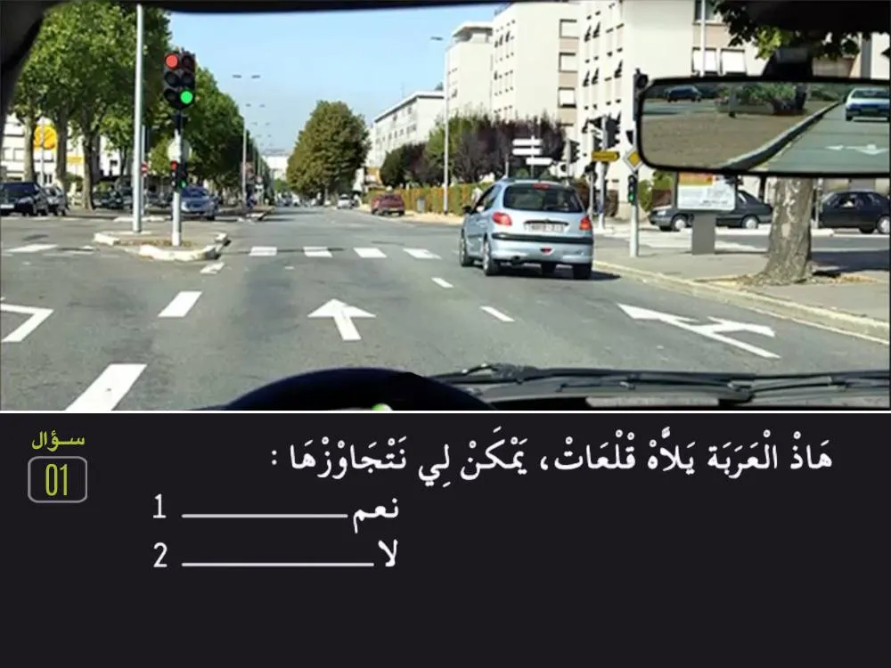
بيّن الجواب
الجواب الصحيح: 1
بما أن العربة التي توجد على اليمين لديها اختيارين، الانعطاف على اليمين أو السّير مباشرة وهذا ما يُوضّحه التّشوير الأفقي (الأسهم المرسومة على الأرض) يعني الطّريق أمامي فارغ ولن تنعطف السّيارة لليسار. وبما أنه لا توجد إشارة طُرقية تمنعني من تجاوزها إذن يمكنني إكمال السّير مباشرة وتجاوزها بما أن الإشارة الضوئية خضراء.
السؤال 2
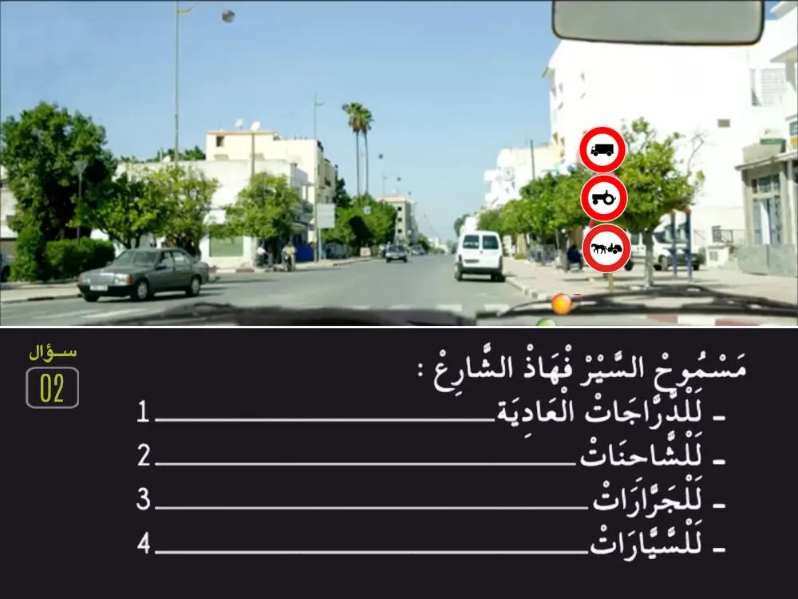
بيّن الجواب
الجواب الصحيح: 1 و 4
لدينا 3 إشارات للمنع، الإشارة الأولى في الأعلى تعني ممنوع مرور الشّاحنات، والثانية تعني ممنوع مرور العربات الفلاحة (الجرارات) وعلامة المنع الثالثة تعني ممنوع مرور العربات المجرورة. إذن في هذه الحالة فقط الدراجات العادية والسيارات هُمْ من يُسمَح لهم المرور في هذا الشّارع.
السؤال 3
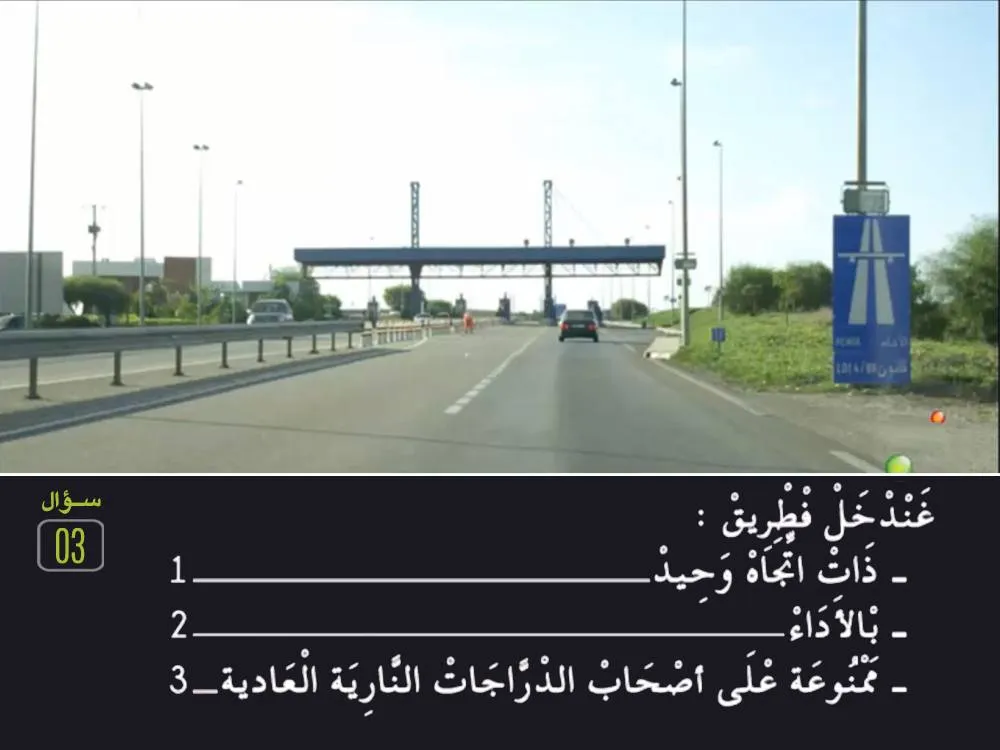
بيّن الجواب
الجواب الصحيح: 1 و 2 و 3
الإشارة الطّرقية تعني بداية الطّريق السيّار، وفي الطّريق السيّار فإن الطّريق ذات إتّجاه واحد يعني إتّجاه السيارات يكون في إتّجاه واحد، وأيضا الطّريق السيّار يكون بالاداء (بلخلاص) وليس مجاني. والطّريق السيار فهي ممنوعة على العربات التي لا تتعدى سّرعتها 60 كلم في الساعة، مثلا الدراجات الهوائية، العربات المجرورة، وأيضا أصحاب الدرّاجات العادية لأن سرعتهم لا تتعدى 60 كلم في الساعة.
السؤال 4
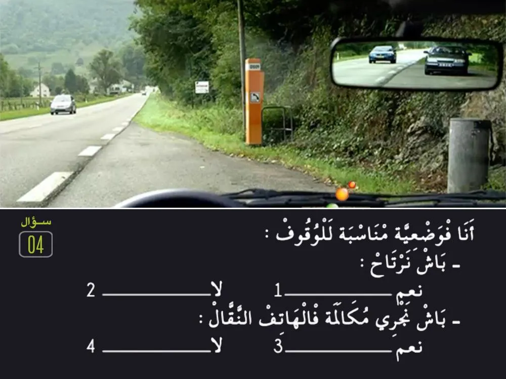
بيّن الجواب
الجواب الصحيح: 1 و 3
أتواجد قرب طريق ذات اتّجاهين، والمكان الذي أتواجد فيه حاليا فهو مسموح بالوقوف والتوقّف فيه لأنه لا يوجد إشارة طرقية تمنعني من الوقوف أو التوقّف فيه. وبما أنني متوقّف في مكان غير ممنوع الوقوف والتوقّف فيه إذن يمكنني الوقوف لكي أرتاح ويمكنني كذلك الوقوف لكي أجري مكالمة هاتفية )بهاتفي النقّال وليس مخدع الهاتف الذي يظهر في الصورة، المخدع الهاتفي الذي يظهر في الصورة هو للحالات الاستعجالية والإتصال بالإغاثة أو النجدة فقط).
السؤال 5
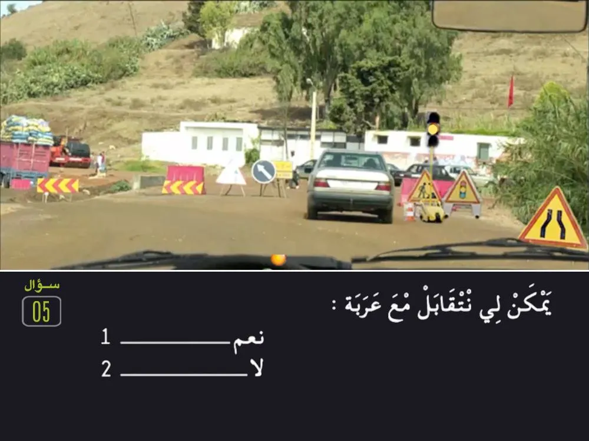
بيّن الجواب
الجواب الصحيح: 1
كما نلاحظ في الصورة فهي تحتوي على العديد من الإشارات الطّرقية المؤقّتة، وهذا دليل على أنه يوجد أشغال في الطّريق. بالنسبة هل سوف أتقابل عربة قادمة في الاتّجاه المعاكس، فنعم يمكن أن أتقابل مع عربة قادمة من الاتّجاه المعاكس لأنه لا توجد إشارة طرقية تشير إلى أن الطّريق ذات إتجاه واحد ولن أتقابل مع عربة. إذن في هذه الحالة يمكن أن أتقابل مع عربة قادمة من الاتّجاه المعاكس.
السؤال 6
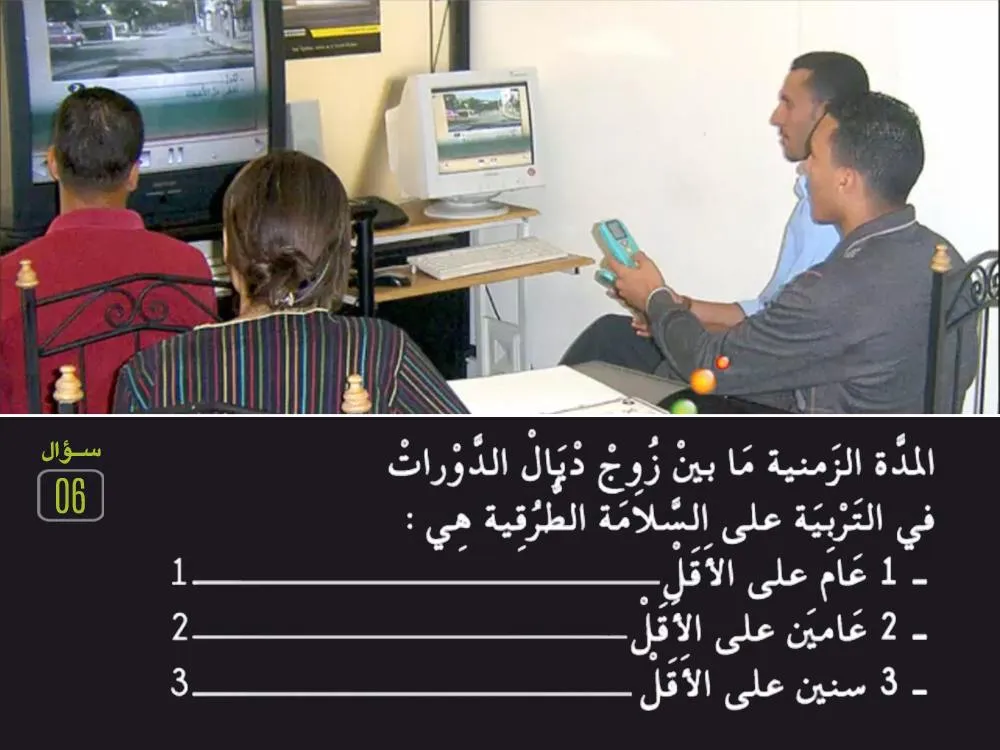
بيّن الجواب
الجواب الصحيح: 3
بالنسبة لدورات التّربية على السّلامة الطّرقية يتم اجتيازها من طرف الشخص الذي يخالف كثيرا قانون السّير ممّا أدّى إلى نفاذ نقاط رخصة السيّاقة الخاصة به. لذلك سوف يلتجأ إلى هذه الدّورات الخاصة بالتّربية على السّلامة الطّرقية لكي يقوم باسترجاع بعض نقاط رخصة سياقته. بالنسبة للسؤال فإن المدّة الزمنية بين دورة للتّربية على السّلامة الطّرقية وأخرى فهي 3 سنوات على الأقل حسب مدونة السّير.
السؤال 7
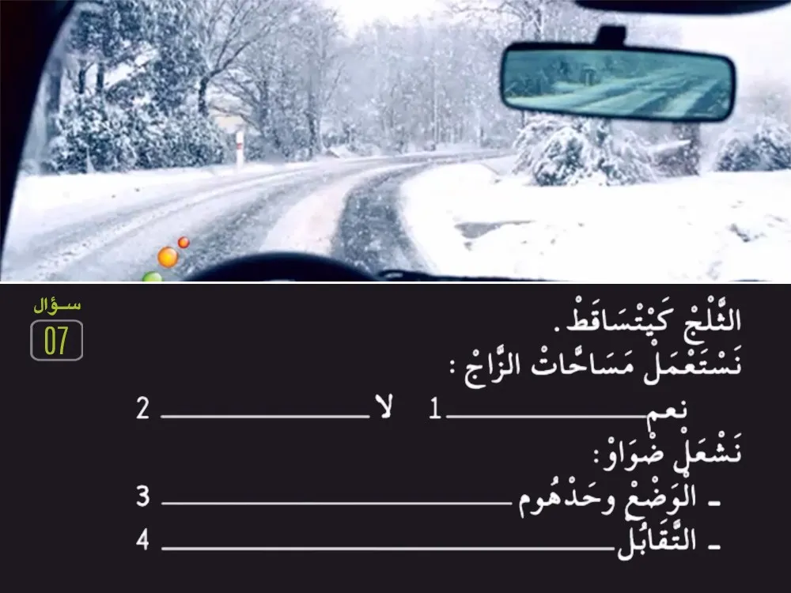
بيّن الجواب
الجواب الصحيح: 1 و 4
عندما يتساقط الثلج فيمكن أن أستعمل مساحات الزجاج لإزالة الثلج عن الزجاج لكي أتمكن من الرؤية بشكل جيّد، بالنسبة للأضواء في الثلج أستعمل أضواء التّقابل (وأضواء الضباب الأمامية والخلفية). بما أنه يوجد فقط أضواء التّقابل أقوم باختيارها.
السؤال 8
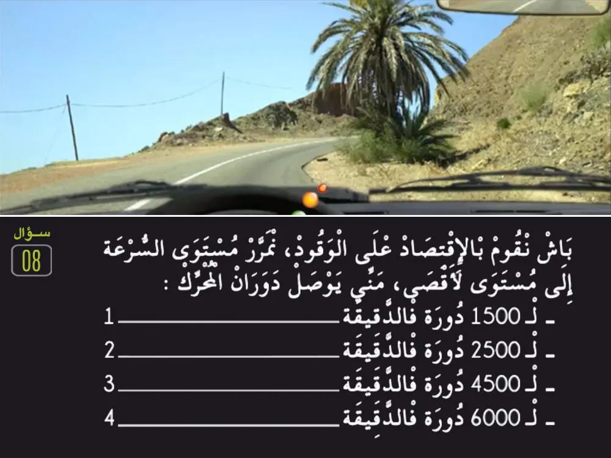
بيّن الجواب
الجواب الصحيح: 2
بالنسبة لعدد دوران المحّرك فهو مؤشر يوجد في لوحة السيارة وهو يشير إلى عدد دوران المحرّك في الدقيقة الواحدة (يعني كم من دورة يقوم بها المحرّك في دقيقة واحدة). عندما أسير في طريق عادية وواطية فيمكن أن أقوم بتغيير مستوى السرعة مثلا من المستوى الثاني إلى الثالث عندما يصل المحرك إلى 1500 دورة في الدقيقة لكي أتصد في الوقود، لكن عندما نتواجد في طريق فيها عْقْبَة ففي هذه الحالة أقوم بتغيير مستوى السرعة إلى مستوى اخر عندما تصل عدد دورات المحرّك إلى 2500 دورة. إذن الإجابة الصحيحة 2500 دورة في الدقيقة الإجابة رقم 2.
السؤال 9
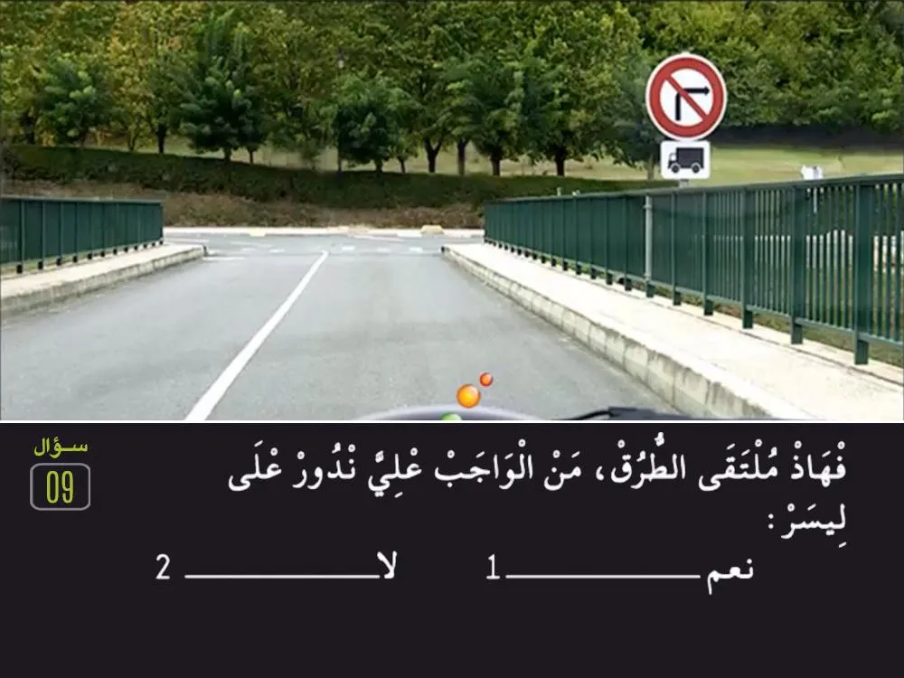
بيّن الجواب
الجواب الصحيح: 2
الإشارة الطّرقي لا تجبرني على الانعطاف لليسار، هذه الإشارة الطّرقية لا تخصّني بل هي تخص الشاحنات الكبيرة وهي تشير أنه ممنوع على الشاحنات الكبيرة الانعطاف على اليمين.
السؤال 10
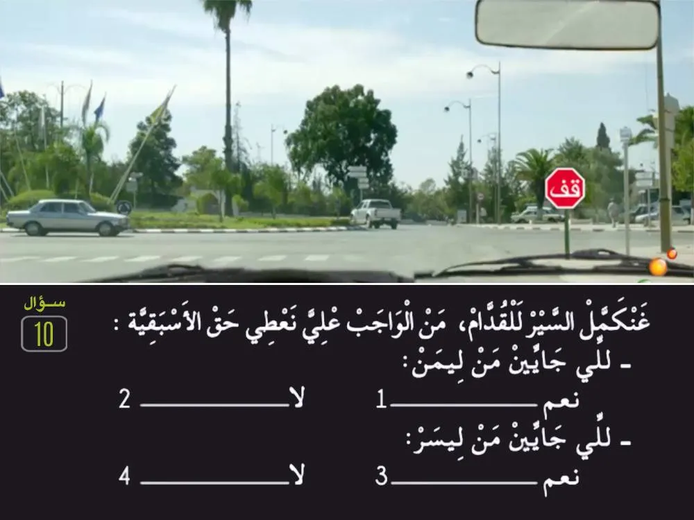
بيّن الجواب
الجواب الصحيح: 1 و 3
لديّ إشارة قف، وفي إشارة قف فإن الوقوف إجباري، أتواجد قرب مدار، وبما أنه لديّ إشاؤة قف إذن في هذه الحالة سوف أقوم بإعطاء حق الأسبقية للعربات القادمة من الجهة اليمنى وأيضا للعربات القادمة من الجهة اليسرى.
السؤال 11
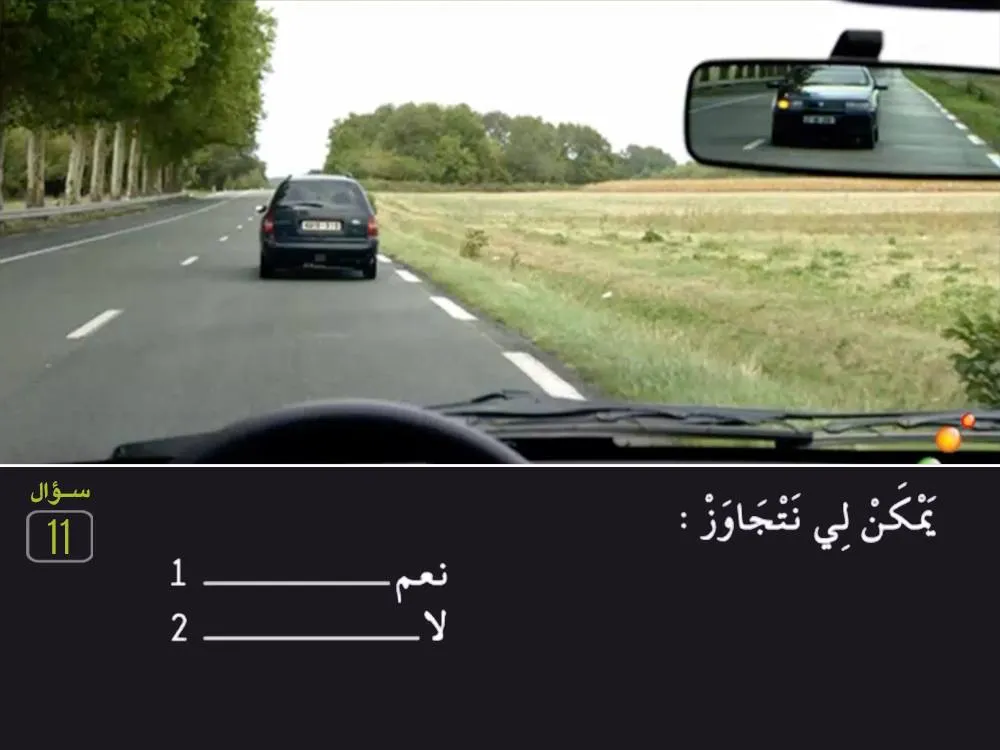
بيّن الجواب
الجواب الصحيح: 2
لديّ مسلكين، مسلك للسير العادي ومسلك اخر للتجاوز، وأيضا التّشوير الأفقي الخط المقطّع يسمح لي بالتّجاوز. لكن يوجد سيارة من الخلف تستعد لعملية التّجاوز، لذلك لا يمكنني أن أتجاوز الان.
السؤال 12
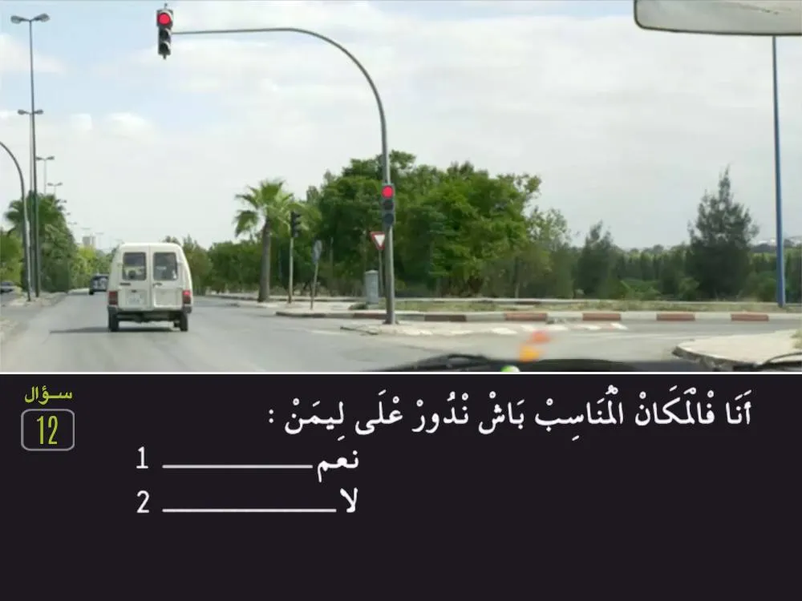
بيّن الجواب
الجواب الصحيح: 1
في أول نظرة سوف نظن أن السيارة متواجدة في المسلك على اليسار، لكن لو لاحظنا جيّدا فإن مِقْوَدْ السيارة متواجد على اليمين وهذا يدل على أن السيارة متواجدة في المسلك المتواجد على اليمين. إذن أنا في المكان المناسب لكي أنعطف على اليمين.
السؤال 13
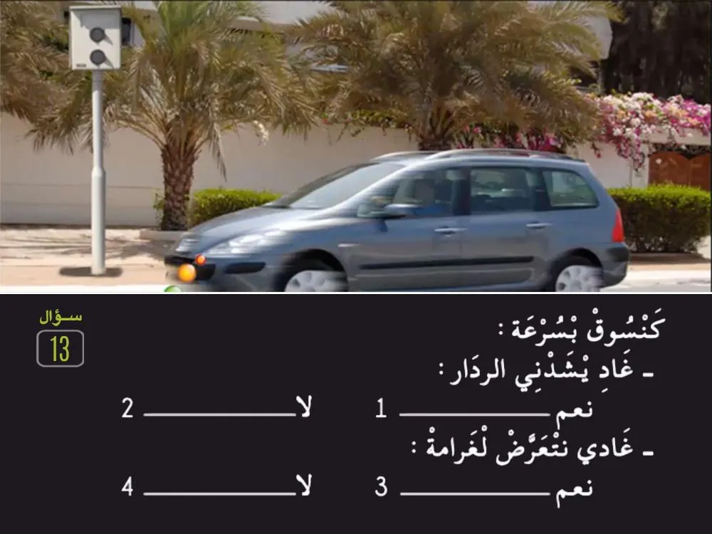
بيّن الجواب
الجواب الصحيح: 1 و 3
لو كنت أسير بسرعة كبيرة وخالفت القانون المسموح به على تلك الطّريق فسوف يشتغل الرادار ويقوم بتسجيل رقم لوحة السيّارة. وبطبيعة الحال بما أنني إرتكبت مخالفة عدم إحترام السّرعة القانونية فسوف أتعرّض لغرامة مالية.
السؤال 14
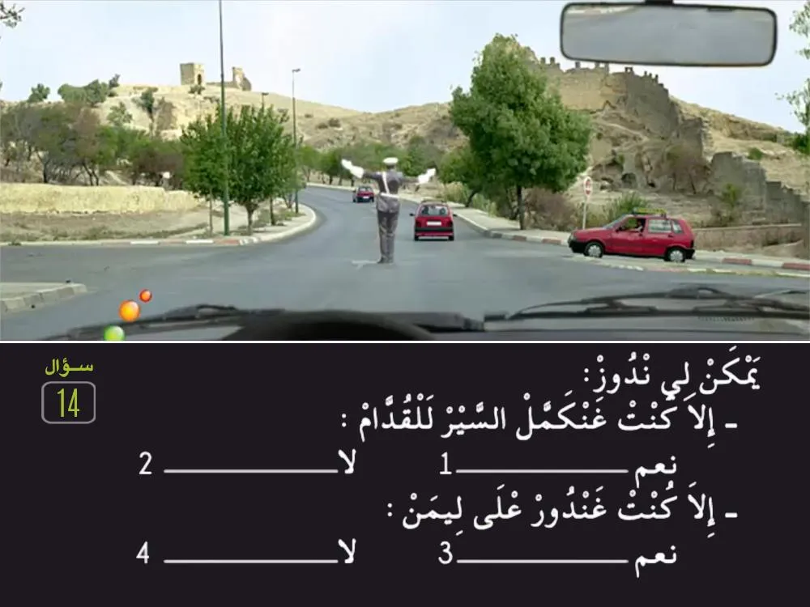
بيّن الجواب
الجواب الصحيح: 2 و 4
أتواجد في ملتقى طرق ويوجد شرطي مرور يُنظّم حركة السّير، في هذه الحالة تلغى جميع الإشارات المرورية ويجب إتباع إشارات الشّرطي. بما أنّ شرطي المرور يقف وظهره أمامنا (كما في الصورة) فهذه الحركة تعني الوقوف مهما كان الاتّجاه الذي سوف أسلُكه، يعني لا يمكنني إكمال السيّر مباشرة ولا يمكنني أن أنعطف إلى اليمين.
السؤال 15
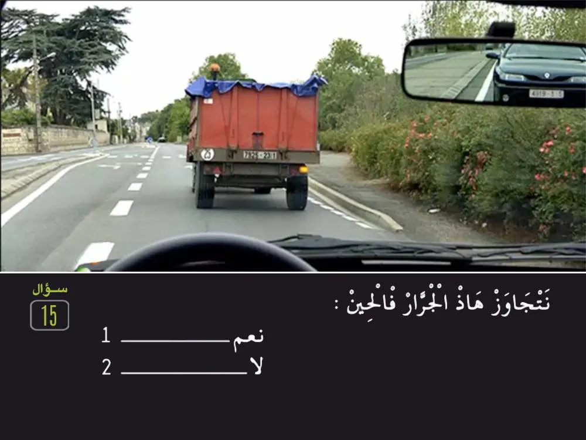
بيّن الجواب
الجواب الصحيح: 2
كما نلاحظ فإن الطّريق ذات إتجاه واحد (الخط المتّصل على أقصى اليسار) يعني يُمكن لي أن أستعمل المسلك المتواجد على اليسار لعملية التّجاوز. يوجد سهم إجبار مرسوم على الأرض يُجبرني على الانعطاف الى اليسار لو استعملت المسلك الذي يتواجد اليسار. يعني لن أستطيع إكمال السّير مباشرة لو قمت بتجاوز الجرار الان وسوف أصبح مُجْبر للانعطاف لليسار لو تجاوزته في الحين.
السؤال 16
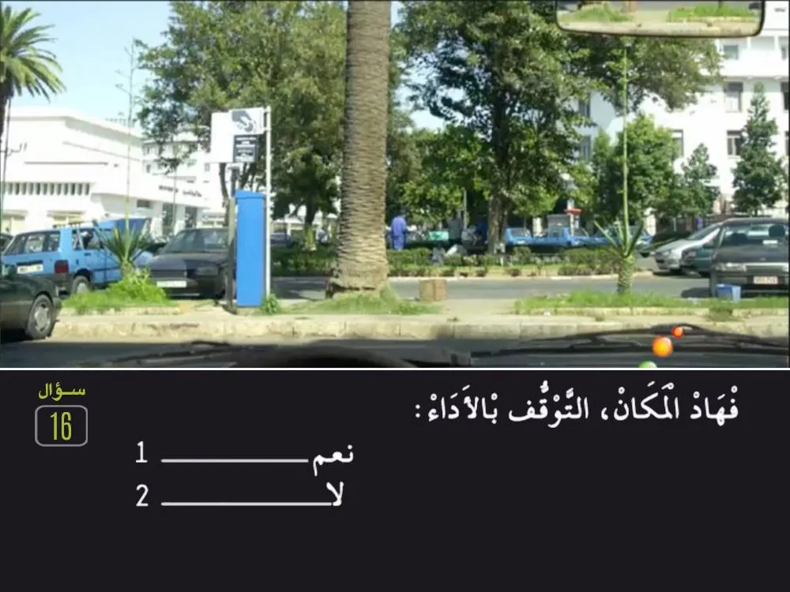
بيّن الجواب
الجواب الصحيح: 1
التوقّف في هذا المكان مدفوع، كما يوضّحه الجهاز الأزرق الظاهر في الصورة وكذلك الصورة فوقه (يد مع نقود) وهي تشير إلى أن المكان غير مجاني للتوقّف فيه.
السؤال 17
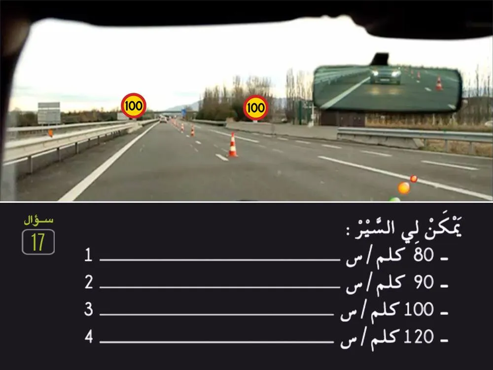
بيّن الجواب
الجواب الصحيح: 1 و 2 و 3
الإشارة المؤقتة الصفراء تحدد السرعة القصوى في 100 كلم في الساعة. إذن يمكنني السّير بأي سرعة أريد بدون تجاوز السرعة المحددة 100 كلم في الساعة. إذن يمكنني السّير ب 80 كلم في الساعة أو 90 كلم في الساعة أو 100 كلم في الساعة.
السؤال 18
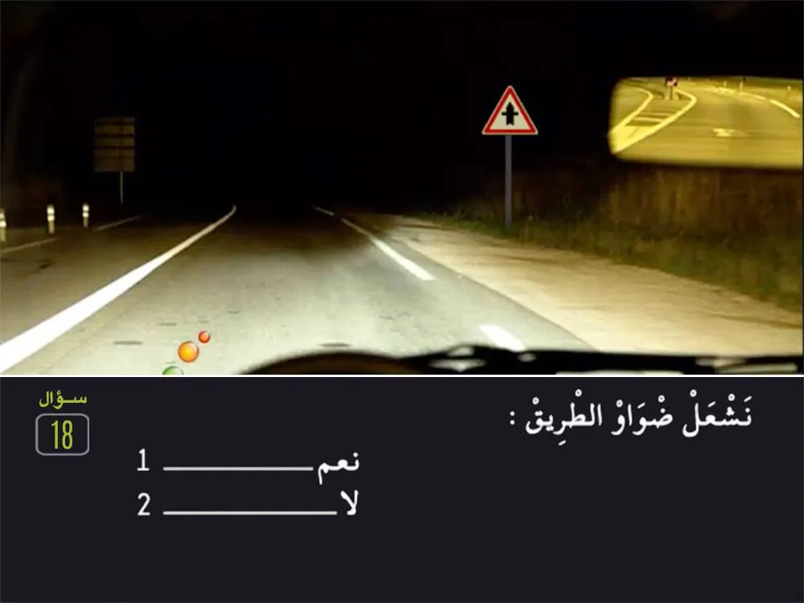
بيّن الجواب
الجواب الصحيح: 1
أتواجد خارج تجمّع سكني ويوجد إشارة طُرقية تعني انتباه لدي طريق ذات أولوية. بما أن الطّريق التي أمامي لا تحتوي على إضاءة ولا توجد سيارات أمامي أو قادمة في الاتجاه المعاكس إذن يمكنني استعمال أضواء الطّريق.
السؤال 19
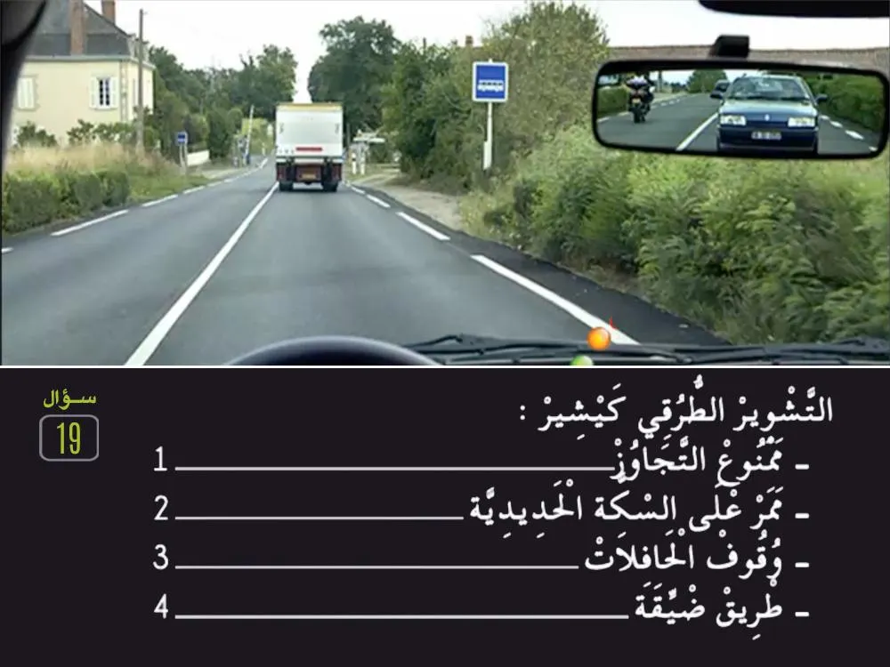
بيّن الجواب
الجواب الصحيح: 1 و 3
تذكير: الإشارات الطّرقية يوجد نوعان: إشارات عمودية وإشارات أفقية. إذن في هذه الحالة التّشوير الطّرقي العمودي يشير إلى وقوف الحافلات (محطة الحافلات) و التّشوير الأفقي الخط المتّصل يشير إلى أنه ممنوع التّجاوز.
السؤال 20
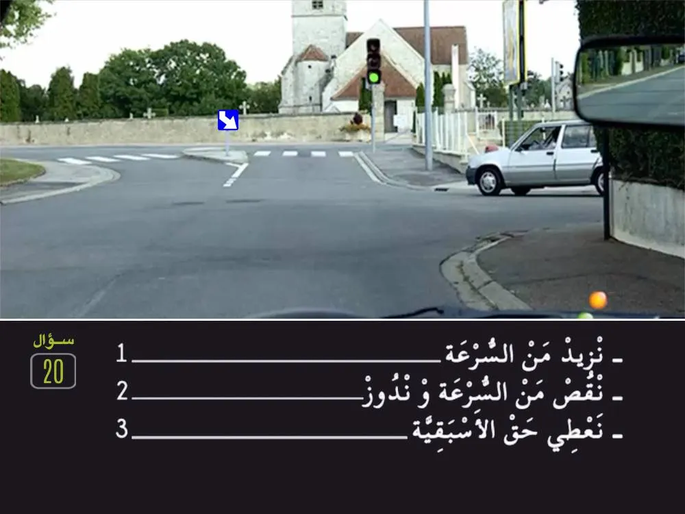
بيّن الجواب
الجواب الصحيح: 3
الإشارة الضوئية خضراء وهي تسمح لي بالمرور في الملتقى الثاني وليس في هذا الملتقى الأول الذي تتواجد فيه السيارة الرّمادية. إذن لا يمكنني المرور، يجب عليّ إعطاء حق الأسبقية للسيارة القادمة من اليمين.
السؤال 21
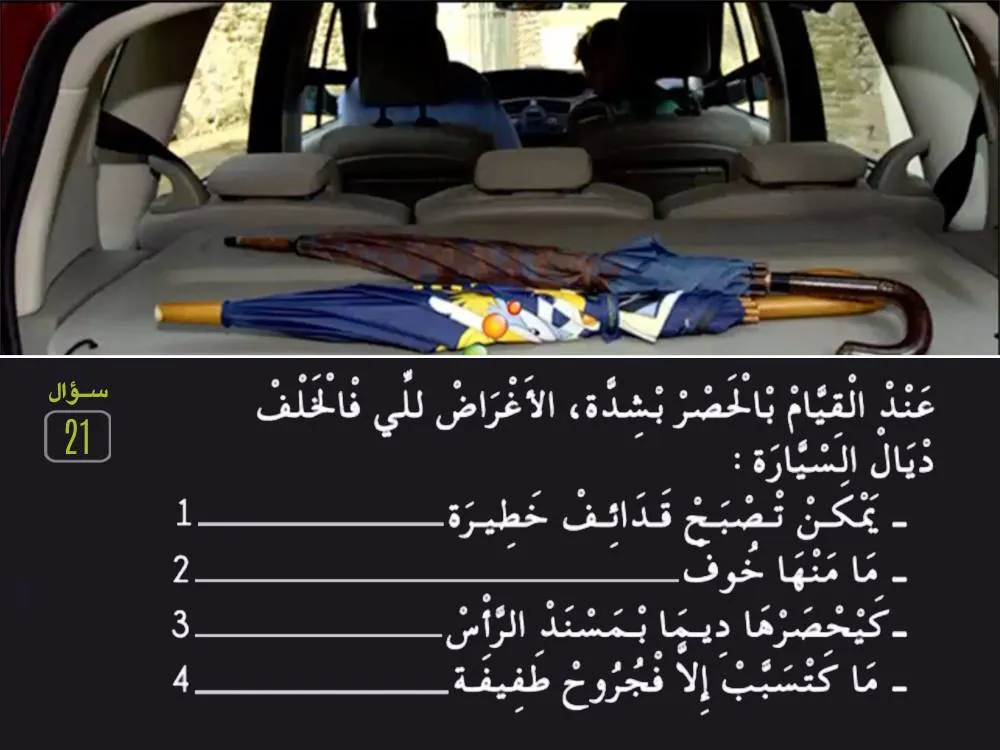
بيّن الجواب
الجواب الصحيح: 1
الحمولة التي نضعها خلف العربة تسبب خطر عندما أقوم بالحصر بقوة لأنها لا تكون مشدودة، لذلك عند الحصر بقوة فيمكن للحمولة الموجودة في خلف السيارة أن تصبح قذائف خطيرة أي سوف تتطاير عند الحصر بقوة وتصبح خطيرة. ينصح بوضع الحمولة داخل حقيبة السيارة (Coffre).
السؤال 22
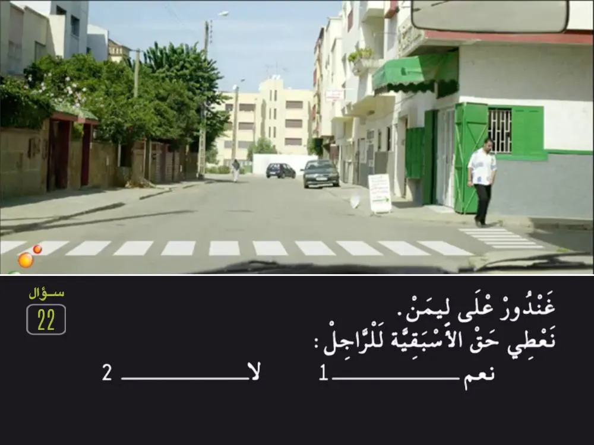
بيّن الجواب
الجواب الصحيح: 1
بما أنني سوف أنعطف على اليمين، فكما ألاحظ يوجد راجل اندمج في ممر الراجلين، إذن الأسبقية للراجل.
السؤال 23
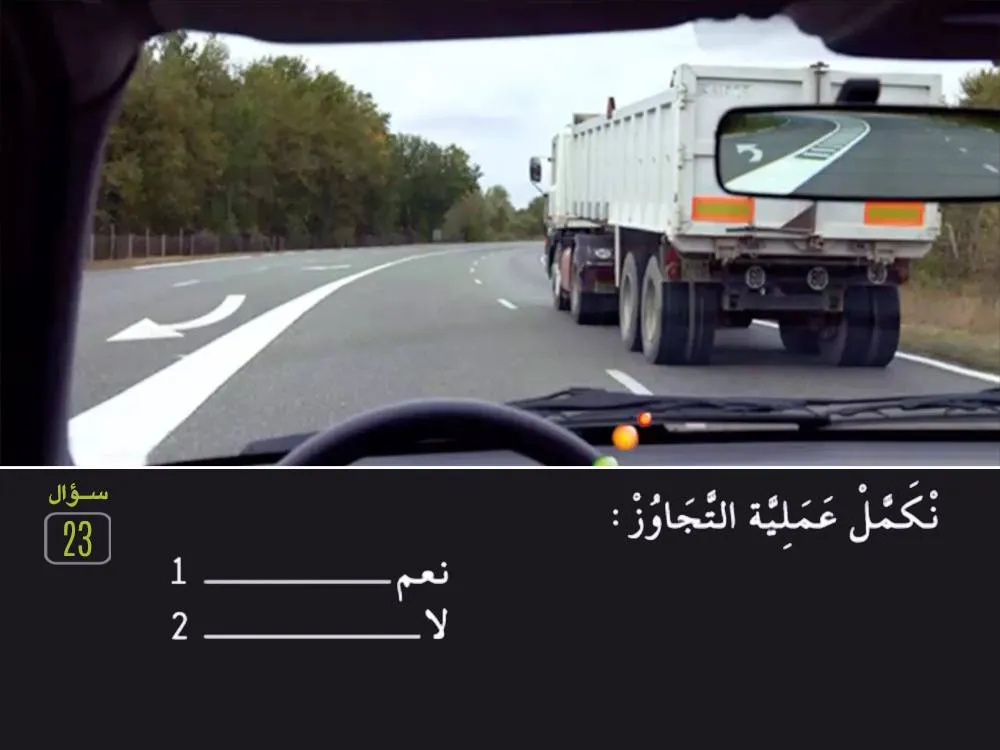
بيّن الجواب
الجواب الصحيح: 1
يوجد خط متّصل على اليسار وهو يعني أنه لديّ مسلكين للسّير، المسلك على اليمين والذي تسير فيه الشاحنة، والمسلك على اليسار والذي أتواجد فيه حاليا وهو خاص بعملية التّجاوز. إذن بما أنه لدي مسلكين فسوف أستعمل المسلك الذي أتواجد فيه حاليا لكي أتجاوز الشاحنة، أي يمكنني إكمال عملية التّجاوز لأنه لن أتقابل مع عربة تسير في هذا المسلك.
السؤال 24
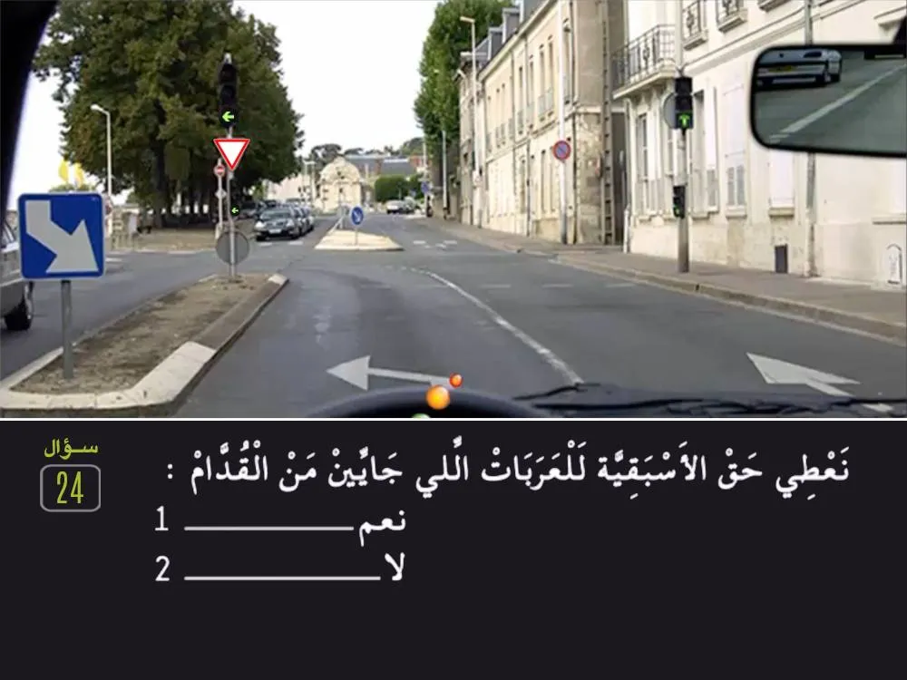
بيّن الجواب
الجواب الصحيح: 2
في هذه الحالة سوف أنعطف على اليسار (تشوير أفقي سهم على اليسار يُجبرني على ذلك في هذا المسلك) يوجد إشارتين، إشارة أعطي حق الأسبقية وفوقها إشارة ضوئية سهم أخضر. في هذه الحالة تلغى إشارة حق الأسبقية وأطبق الإشارة الضوئية السهم الاخضر. وعندما يكون سهم أخضر يسمح لي بالمرور فبشكل أوتوماتيكي، والعربات التي في الاتجاه المعاكس سوف تتوفر على إشارة ضوئية حمراء. يعني عندما أنعطف لليسار لن أجد أصلا عربات قادمة. إذن لن أعطي حق الأسبقية للعربات القادمة من الأمام (لأنه لا توجد أصلا عربات قادمة من الأمام لأنه في هده الحالة لديها ضوء أحمر ويجب عليها أن تسمح لي بالمرور أنا لأنه لدي إشارة ضوئية سهم أخضر يسمح لي بالمرور أولا).
السؤال 25
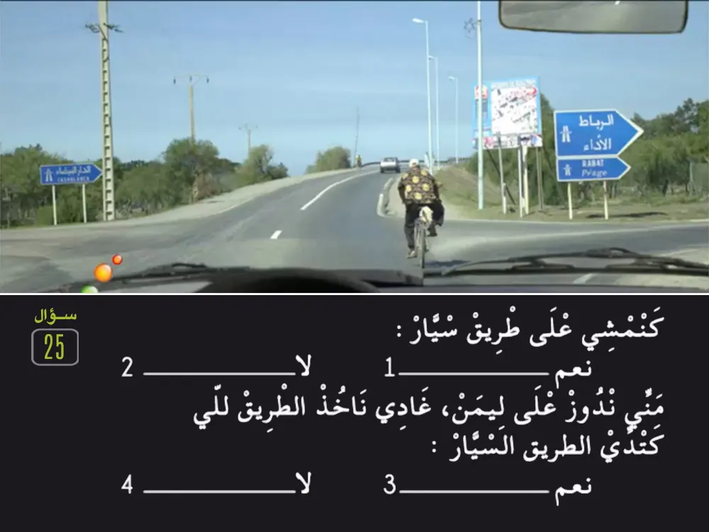
بيّن الجواب
الجواب الصحيح: 2 و 3
لا يوجد ملتقى طُرق في الطريق السيّار بهذا الشّكل، أيضا لا يوجد دراجات في الطّريق السيّار، وأيضا لا يمكن أن يوجد خط متّصل في وسط الطريق لطريق سيّار. هذه كلّها أشياء تشير إلى أننا لا نتواجد حاليا في طريق سيّار. لكن إذا قمت بالانعطاف على اليمين فسوف أتجه إلى طريق يؤدي إلى طريق سيّار كما تشير إليها الاشارة الطّرقية الزرقاء.
السؤال 26
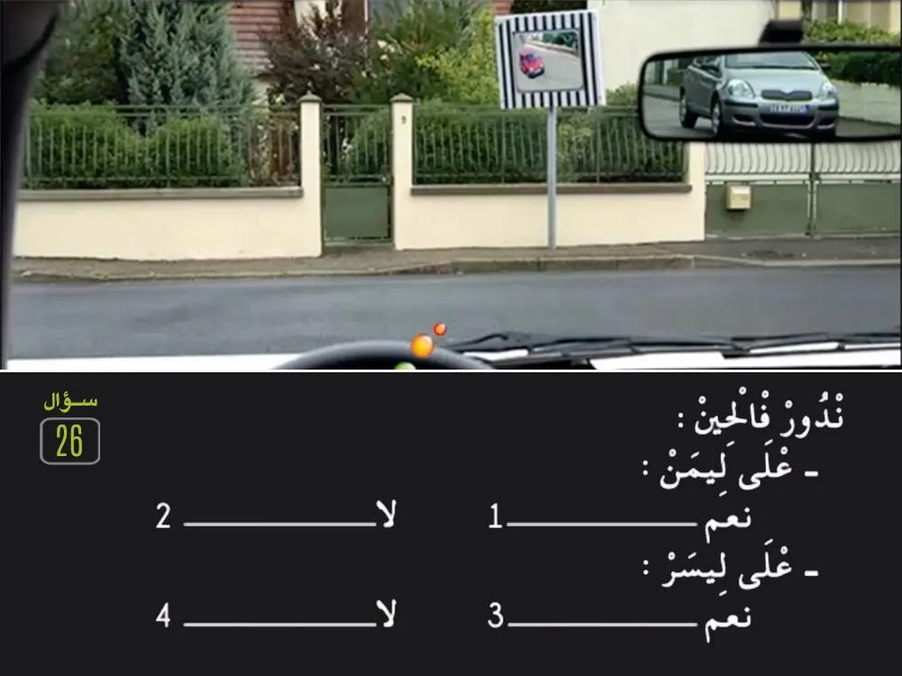
بيّن الجواب
الجواب الصحيح: 2 و 4
في ملتقيات الطّرق لا نقوم بالانعطاف في الحين، يجب علينا الانقاص من السرعة والوقوف ومراقبة الطّريق من ناحية هل يوجد عربات قادمة لكي نتأكد من سلامة الطّريق وبعد ذلك يمكننا المرور.
السؤال 27
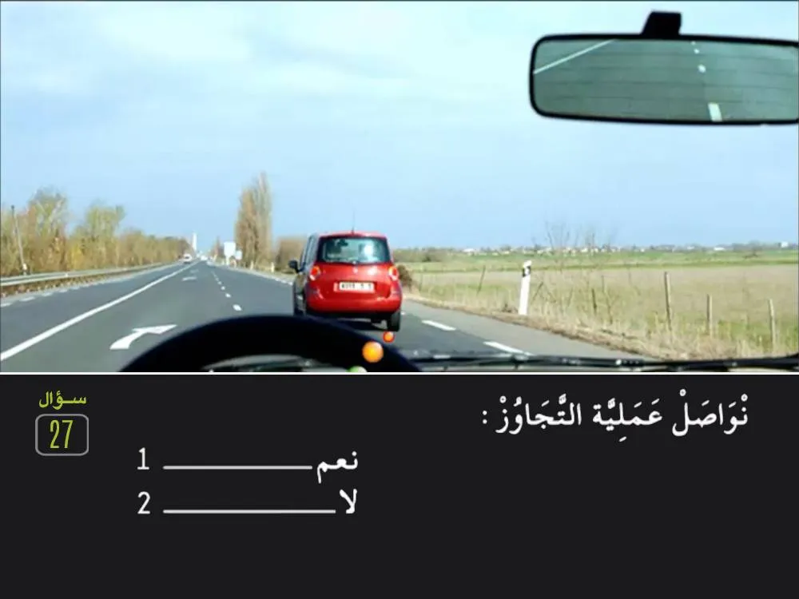
بيّن الجواب
الجواب الصحيح: 1
بما أنني بدأت عملية التجاوز فيمكنني إكمالها على الرغم من وجود أسهم الانحياز التي تجبرني على الانحياز لليمين. (لو كنت ما زلت في المسلك على اليمين وأردت أن ابدأ في عملية التجاوز في هذه الحالة لا يمكنني لأنه يوجد أسهم الانحياز، لكن بما أنني بدأت التجاوز من قبل، فيمكنني مواصلته بدون مشكلة).
السؤال 28
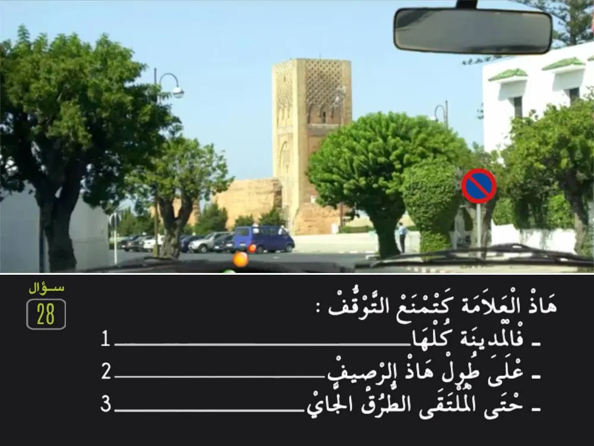
بيّن الجواب
الجواب الصحيح: 2 و 3
الإشارة الطّرقية تعني ممنوع التوقّف، والمنع من التوقّف يبدأ من عند العلامة وينتهي في أول ملتقى طرق قادم. يعني أنه ممنوع التوقّف من عند العلامة أي على طول الرصيف الذي توجد فيه علامة المنع وحتى ملتقى الطّرق القادم.
السؤال 29
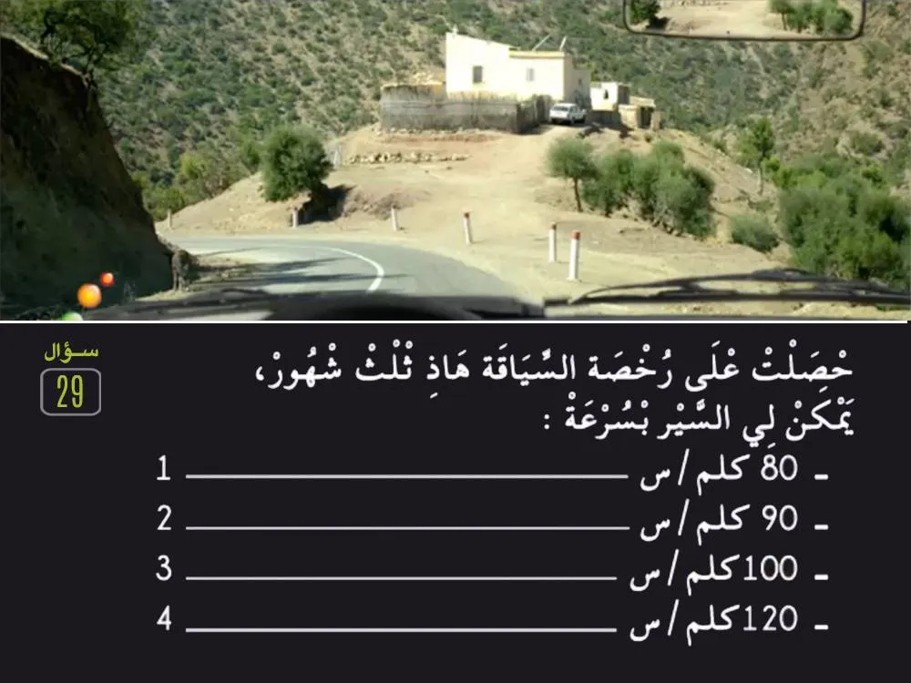
بيّن الجواب
الجواب الصحيح: 1 و 2
خلال الفترة الاختبارية والتي هي عامين (2) فالسرعة القصوى التي يمكنني أن أسير بها هي 90 كلم في الساعة. يعني أنه يمكنني أن أسير بأي سرعة أريد (مع إحترام إشارات المرور) لكن بدون أن أتجاوز سرعة 90 كلم في الساعة. يعني يمكنني السّير بسرعة 80 كلم في الساعة وأيضا بسرعة 90 كلم في الساعة.
السؤال 30
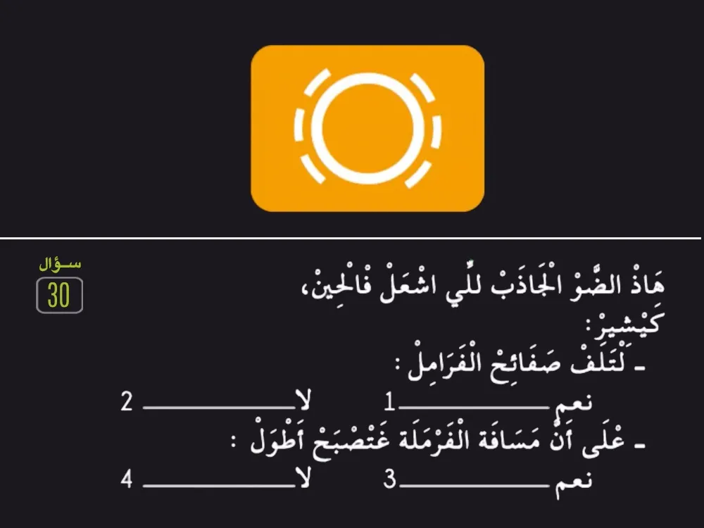
بيّن الجواب
الجواب الصحيح: 1 و 4
هذا الضوء الجاذب فهو خاص بصفائح الفرامل، لو إشتغل وأنا أقود السيّارة فهذا يعني أن صفائح الفرامل بدأت بالتّلف، وهذا لا يعني ان مسافة الفرملة سوف تُصبح أطول.
السؤال 31
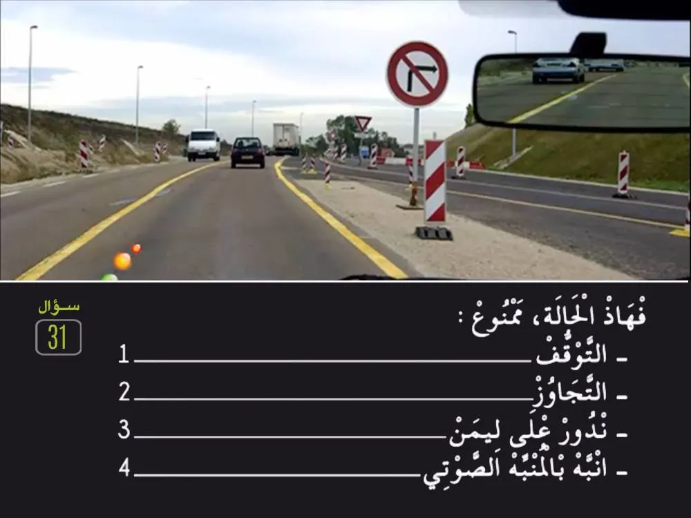
بيّن الجواب
الجواب الصحيح: 1 و 2 و 3
في هذه الحالة توجد العديد من العلامات الطّرقية، الإشارة الطّرقية العمودية على اليمين فهي تُشير على أنه ممنوع الانعطاف على اليمين، يوجد أشغال، الخط المتّصل الأصفر فهو يشير إلى أن التّجاوز ممنوع، وأيضا الخط متّصل على الجهة اليمنى وهو يعني أنه ممنوع الوقوف والتوقّف. بالنسبة للمنبّه الصوتي فلا توجد إشارة طُرقية تمنعني من استعماله.
السؤال 32
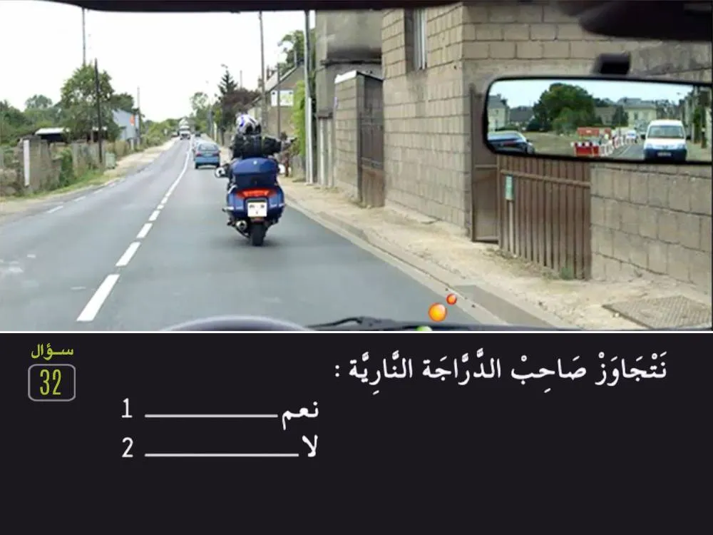
بيّن الجواب
الجواب الصحيح: 2
كما نلاحظ في الصورة فإن التّشوير الأفقي الخط المتقطّع سوف يُصبح متّصل، إذن لا يمكنني أن أتجاوز صاحب الدراجة النارية.
السؤال 33
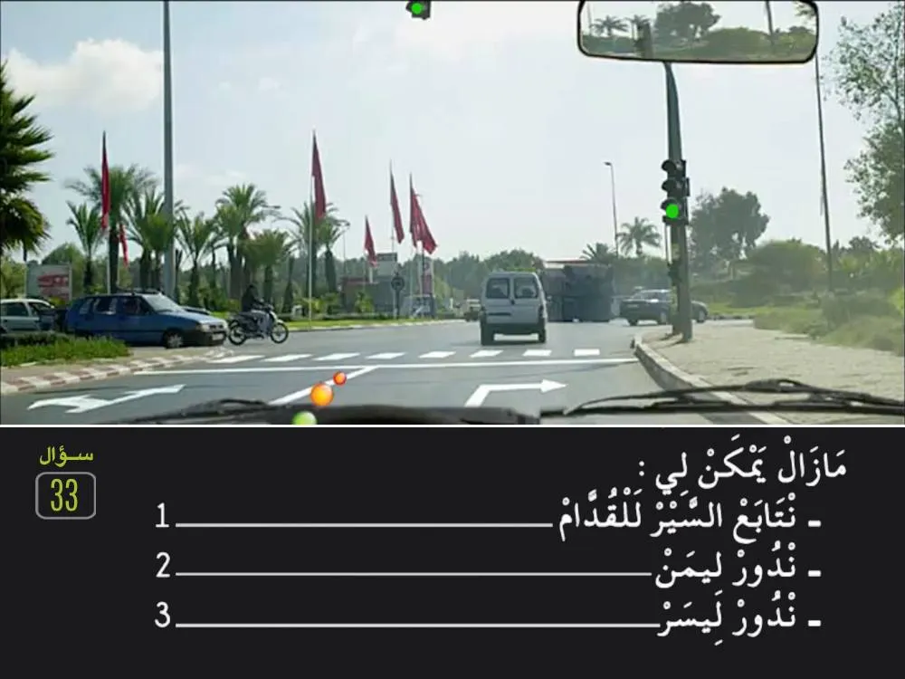
بيّن الجواب
الجواب الصحيح: 2
الإشارة الضوئية الخضراء تسمح لي بالمرور، والتّشوير الأفقي سهم الإجبار المرسوم على الأرض فهو يُّجبِرُني على الانعطاف على اليمين. إذن يمكنني فقط المرور والانعطاف على اليمين. (لا يمكنني مواصلة السّير مباشرة ولا يمكنني كذلك الانعطاف على اليسار).
السؤال 34
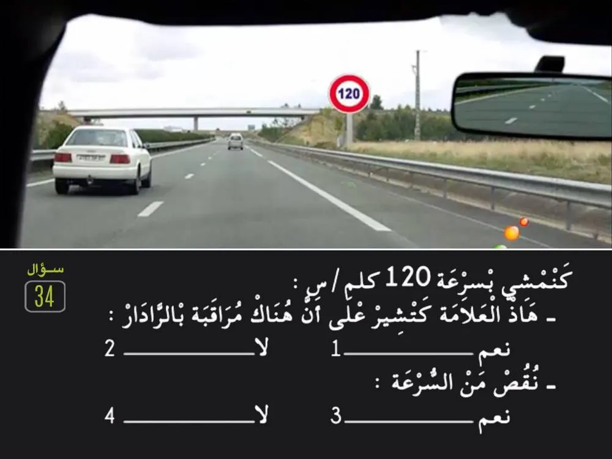
بيّن الجواب
الجواب الصحيح: 2 و 4
الإشارة الطّرقية تعني تحديد السرعة في 120 كلم في الساعة كسرعة قُصوى، ولا تعني أنه يوجد مراقبة بالرّادار. كما أنه ليس من الواجب عليّ أن أنقص من السرعة لأنني أحترم السرعة القانونية التي تشير إليها الإشارة الطّرقية 120 كلم في الساعة.
السؤال 35
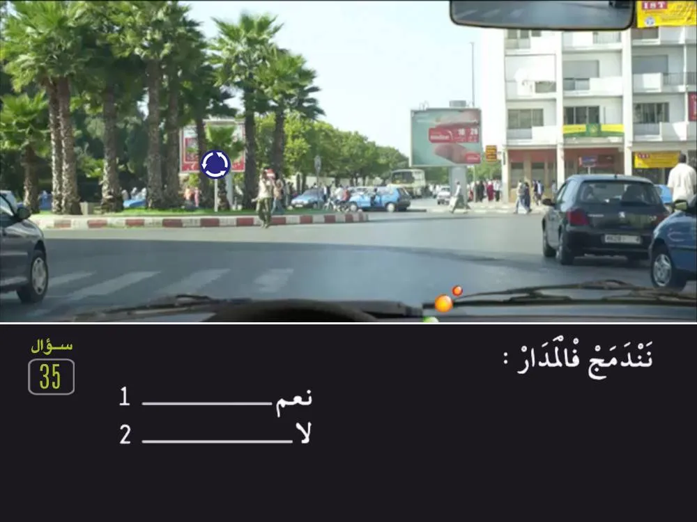
بيّن الجواب
الجواب الصحيح: 1
توجد إشارة المدار إجباري، هذا يعني أنه يجب عليّ إتّباع المدار وليس الانعطاف مباشرة على اليسار لأنني سوف أرتكب مخالفة. أندمج في المدار معناه أنني أحترم قانون المدار لو كنت أريد أن أنعطف على اليسار. وليس كما ذكرنا الانعطاف مباشرة على اليسار.
السؤال 36
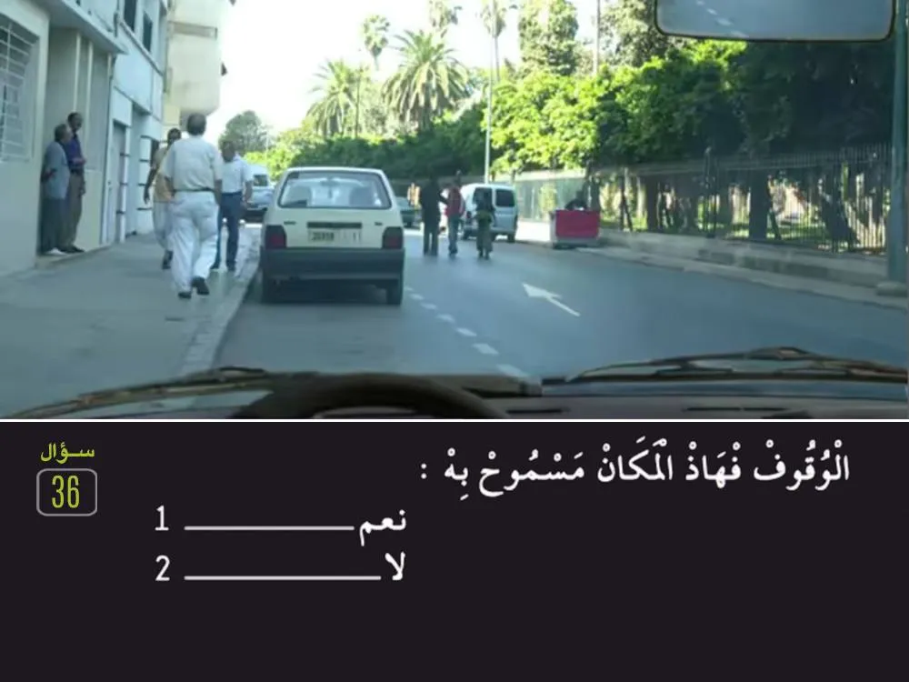
بيّن الجواب
الجواب الصحيح: 1
التّشوير الأفقي السهم المرسوم على الأرض يُشير على أن الطريق ذات إتّجاه واحد. في هذه الحالة عندما تكون الطّريق ذات إتّجاه واحد فيمكنني الوقوف أو التوقّف على الجهتين إذا لم تكن هنالك إشارات طرقية تمنع ذلك. وبما أنه لا يوجد إشارات طُرقية تمنع الوقوف فيمكنني الوقوف على الجهة اليسرى بما أن الطّريق ذات إتّجاه واحد.
السؤال 37
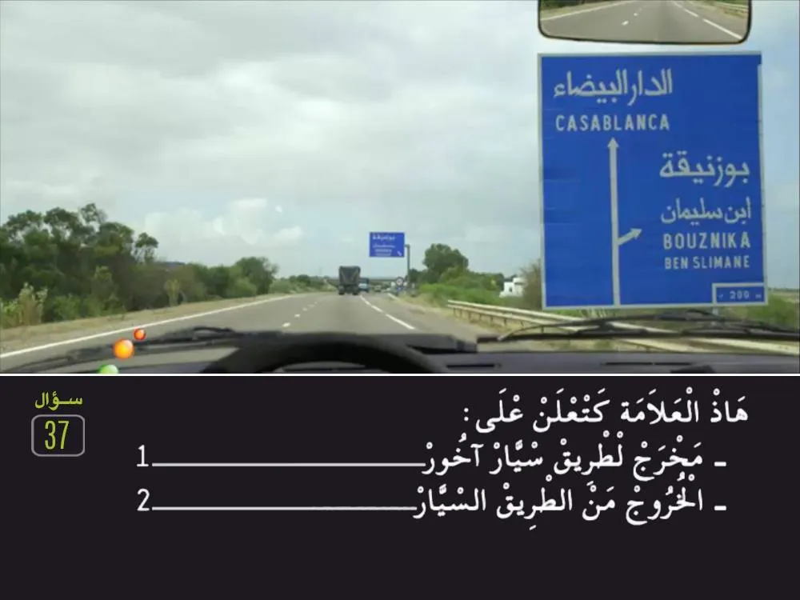
بيّن الجواب
الجواب الصحيح: 2
أتواجد حاليا في طريق سيّار، في العلامة الطّرقية كما نلاحظ يوجد سهم صغير يُشير إلى بوزنيقة وابن سليمان، وهو يعني الخروج من الطّريق السيّار لو اتّجهنا إلى بوزنيقة وابن سليمان وليس مخرج لطريق سيّار اخر.
السؤال 38
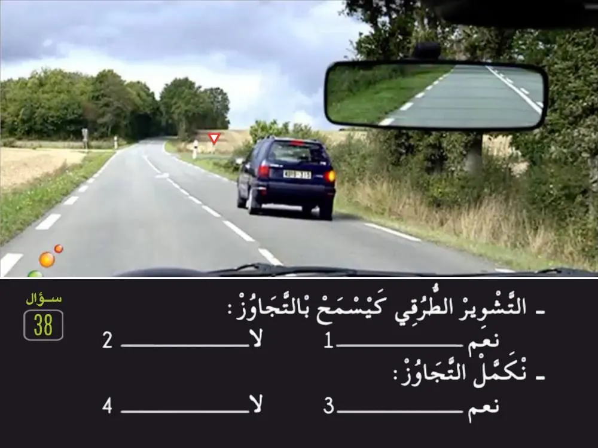
بيّن الجواب
الجواب الصحيح: 1 و 3
التّشوير الأفقي الخط المتقطّع يسمح بالتجاوز، العربة التي أمامنا سوف تنعطف إلى اليمين أو سوف تقف على جانب الطّريق، يعني لا يوجد مشكلة بالنسبة لي لإكمال عملية التّجاوز، كذلك في ملتقى الطّرق القادم العربات التي سوف تأتي من الجهة اليمنى أو اليسرى لديها علامة طرقية إعطاء حق الأسبقية، يعني سوف يقومون بإعطائي حق أسبقية وهذا يعني أنا أسير في طريق ذات أولوية وعندما تكون لديّ طريق ذات أولوية فإن التجاوز مسموح به. (بالنسبة لأسهم الانحياز المرسومة على الأرض فهي للعربات القادمة في الاتّجاه المعاكس ولا تعنيني). الإجابة الصحيحة 1 و 3.
السؤال 39
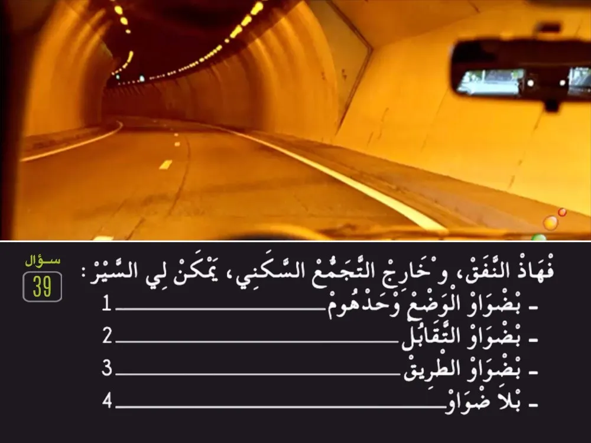
بيّن الجواب
الجواب الصحيح: 2
داخل تجمّع سكني او خارج تجمّع سكني، فإنه في داخل النّفق ومهما كانت اضاءته فاستعمل دائما أضواء التّقابل.
السؤال 40
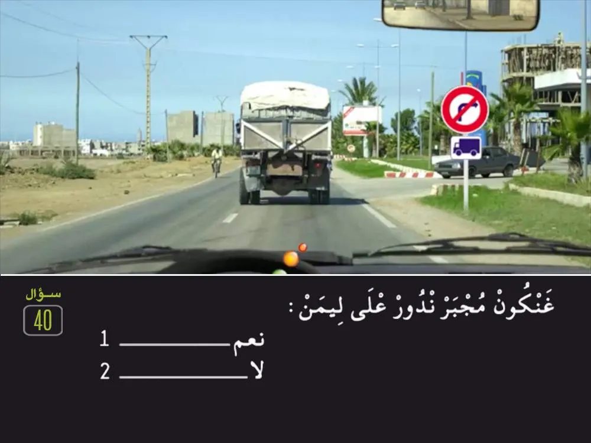
بيّن الجواب
الجواب الصحيح: 2
الإشارة الطّرقية لا تعنيني، هي تُشير على أن الشاحنات ممنوع عليهم أن ينعطفوا على اليمين. ولا تعني أبدا الإجبار للانعطاف لليمين بالنسبة لي.